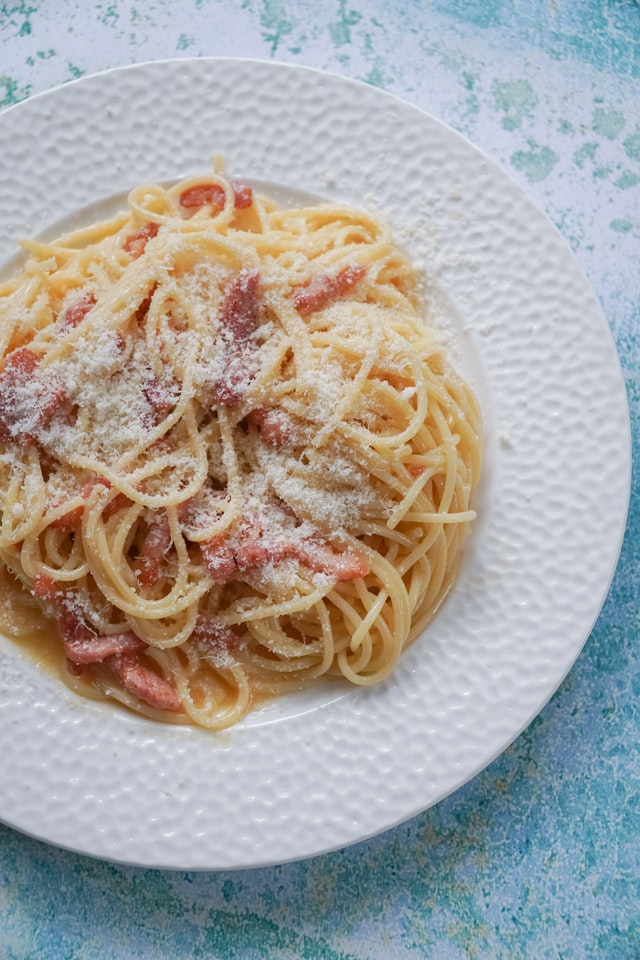

Spaghetti Carbonara

Description
The first recipe that I'm going to present you is Spaghetti Carbonara: a very popular recipe in Italy. It is a pasta dish, very rich, creamy and peppery. Everyone makes it in its own way (and also everyone pretends its own is the original way).
If you ever find yourself in Rome, its birth place, you have to try it there, but in the meantime you could try to make it with your own hands, it's not very difficult!
Ingredients for about 4 people (in random order)
- 320 grams of pasta (usually Spaghetti, but Rigatoni is fine too)
- 150 grams of jowls (a good alternative is bacon)
- 6 egg yolks
- 50 grams of Pecorino cheese (or Parmesan cheese)
- Black pepper to taste
Steps
- First of all, put a pot of water on the stove to boil.
- In the meantime, chop the jowls into cubes and cook it for about 10 minutes in a non-stick pan without adding any grease (it actually has more than enough itself!)
- When the water boils, add a handful of coarse salt, then add the pasta to cook it "al dente" (don't throw it to the wall, just taste it, it should take about 8 minutes).
- Mix the yolks with most of the Pecorino cheese.
- When the pasta is cooked and the jowls have turned brownish, drain the pasta and put it in the pan stirring to let all blend together well.
- Turn off the heat and add the eggs, mixing rapidly to avoid cooking the eggs. To make it more creamy, a spoon of cooking water of the pasta could be added.
- Serve it with more Pecorino cheese on top and a sprinkling of black pepper.
Back to Homepage